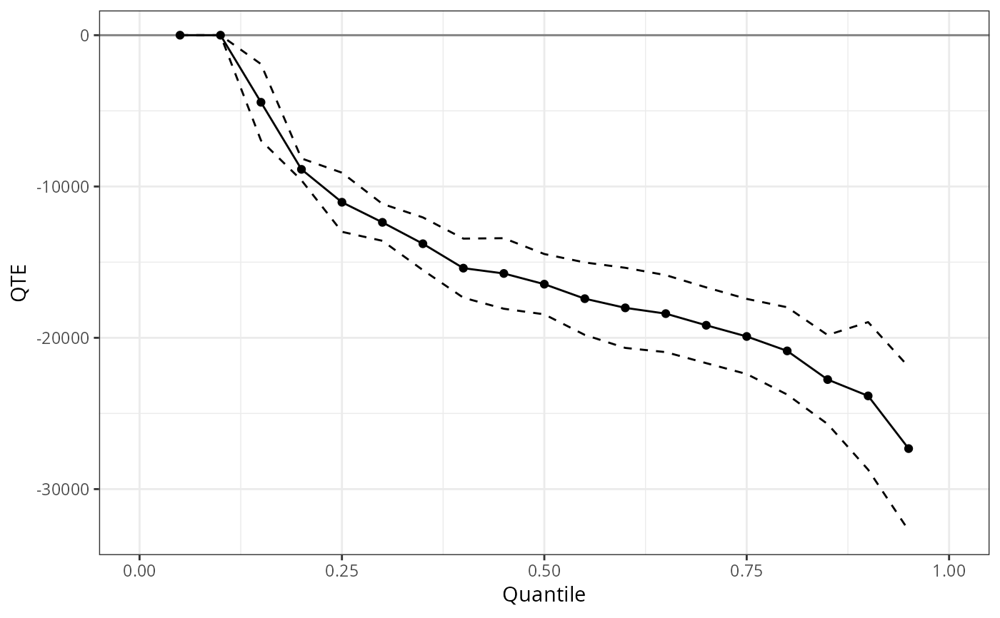

Estimates the Quantile Treatment Effect (QTE) or Quantile
Treatment Effect on the Treated (QTT) under unconfoundedness, also known
as selection on observables, with cross-sectional data. The key
identifying assumption is \((Y(0), Y(1)) \perp D \mid X\), i.e.,
potential outcomes are independent of treatment conditional on
covariates \(X\). For staggered treatment adoption with panel or
repeated cross-section data, see lou_qtt.
Three estimation methods are available via est_method:
"ipw"Propensity-score reweighting (Firpo 2007). The propensity score \(p(X) = P(D=1|X)\) is estimated by logit or probit and used to reweight the sample so that the covariate distributions of the treated and untreated groups match. For the QTE, both groups are reweighted toward the population distribution; for the QTT, only the untreated group is reweighted toward the treated covariate distribution.
"reg"Outcome regression via quantile regression inversion.
rqis fit on a dense internal grid of \(\tau\) values, yielding a conditional quantile function \(Q_{Y|X,D=j}(\tau)\) for each arm \(j\). The marginal distribution is recovered by averaging conditional quantile functions over the empirical covariate distribution (Melly 2006; Chernozhukov, Fernandez-Val, and Melly 2013)."aipw"Doubly-robust augmented IPW. Combines the propensity score model with the conditional quantile outcome model. The CDF estimator is consistent if either the propensity score or the outcome model is correctly specified (semiparametric efficiency when both are correct).
When xformula = ~1 (the default), all three methods reduce to
simple quantile differences between the treated and untreated groups, which
is consistent under unconditional unconfoundedness. Covariates are required
for covariate-adjusted estimation.
Rows with a missing value in the outcome, treatment, weights or any
covariate in xformula are dropped, with a warning.
Standard errors and confidence intervals are computed via the empirical
bootstrap, resampling rows of data, or whole clusters when
clustervars is given.
Usage
unc_qte(
yname,
dname,
data,
xformula = ~1,
weightsname = NULL,
clustervars = NULL,
probs = seq(0.05, 0.95, 0.05),
alp = 0.05,
biters = 100,
cband = TRUE,
boot_type = "empirical",
method = c("logit", "probit"),
est_method = c("ipw", "reg", "aipw"),
target = c("qte", "qtt"),
cond_dist = c("qr", "dr"),
cl = 1,
xformla = NULL
)Arguments
- yname
character; name of the outcome variable in
data.- dname
character; name of the binary treatment indicator in
data(1 = treated, 0 = untreated).- data
data.frame containing the analysis data.
- xformula
one-sided formula for covariates used in the propensity score and/or outcome model, e.g.
~ age + I(age^2) + education. Default~1uses no covariates (simple quantile differences).- weightsname
character; name of a column in
datacontaining sampling weights. DefaultNULLapplies equal weights.- clustervars
character; name of a column in
datato cluster standard errors on (one variable). The bootstrap then resamples whole clusters instead of rows. DefaultNULLtreats rows as independent.- probs
numeric vector of quantile levels at which to evaluate the QTE or QTT. Default
seq(0.05, 0.95, 0.05).- alp
significance level for confidence intervals. Default 0.05.
- biters
number of bootstrap iterations for standard errors and confidence bands. Default 100.
- cband
logical; if
TRUE(default),qte.lowerandqte.upperform a uniform confidence band, simultaneous over all quantiles inprobs:qte\(\pm\)c\(\times\)qte.se, with the bootstrap critical valueccomputed from draws standardized byqte.se(as the panel estimators' uniform bands are). IfFALSE, they are pointwise intervals,qte\(\pm z_{1-\alpha/2}\)qte.se.- boot_type
bootstrap variant. Currently only
"empirical"is supported.- method
propensity score link function:
"logit"(default) or"probit". Used byest_method = "ipw"and"aipw".- est_method
estimation method; one of:
"ipw"(default) — inverse propensity weighting"reg"— outcome regression via quantile regression inversion ("or"is a deprecated alias)"aipw"— doubly-robust augmented IPW
- target
target parameter; one of:
"qte"(default) — population QTE: \(Q_{Y(1)}(\tau) - Q_{Y(0)}(\tau)\)"qtt"— QTT (effect on the treated): \(Q_{Y(1)|D=1}(\tau) - Q_{Y(0)|D=1}(\tau)\)
- cond_dist
For
est_method = "reg"or"aipw", how the conditional outcome distributions are estimated:"qr"(default) for quantile regression or"dr"for distribution regression (a logit of \(1\{Y \le y\}\) on the covariates at a grid of thresholds; Chernozhukov, Fernandez-Val and Melly 2013). Ignored for"ipw".- cl
number of cores for parallel bootstrap. Default 1 (sequential).
- xformla
Deprecated; use
xformula. Still accepted, with a warning.
Value
An object of class QTE containing:
qtenumeric vector of estimated QTE (or QTT) at each element of
probs.ateestimated ATE (or ATT when
target = "qtt").qte.sebootstrap standard errors for
qte(the standard deviation of the bootstrap draws).qte.lower,qte.upperconfidence bounds for
qte: a uniform band ifcband = TRUE, pointwise intervals otherwise (seecband).cbandwhether
qte.lower/qte.upperare a uniform band.ate.se,ate.lower,ate.upperSE and CI for
ate.cbootstrap critical value for a uniform band over
probs.probsthe
probsvector passed by the user.pscore.regfitted propensity score
glmobject (without copies of the data:coef(),vcov(),summary(),fitted()andpredict(newdata = )work;anova()andupdate()do not), orNULLwhenest_method = "reg".F.treated.t,F.treated.t.cfECDFs of the estimated quantiles of \(Y(1)\) and \(Y(0)\) at
probs.
Use summary() to print a formatted table and plot() to
display the QTE curve with confidence bands.
Discrete outcomes
Quantile treatment effects usually require a continuous outcome. With
mass points (e.g. many zeros) or few distinct values, quantiles jump and
effects at quantiles inside a mass point are 0 by construction;
identification based on ranks or quantile functions (change-in-changes,
quantile DiD, the panel and distributional DiD copula arguments) only
bounds the effects (Athey and Imbens 2006, Section 4); and bootstrap
inference for quantiles can be unreliable. The estimators warn (once per
call, class qte_discrete_outcome) when more than 10\
outcome's observations share one value or it takes at most 20 distinct
values, across all groups and periods; the thresholds are the options
qte.mass_point_tol and qte.discrete_n_unique. The
diagnostics are returned as outcome_discreteness.
cdf_did is identified for discrete outcomes.
References
Firpo, Sergio. “Efficient Semiparametric Estimation of Quantile Treatment Effects.” Econometrica 75(1), pp. 259–276, 2007.
Melly, Blaise. “Estimation of Counterfactual Distributions Using Quantile Regression.” Working paper, University of St. Gallen, 2006.
Chernozhukov, Victor, Ivan Fernandez-Val, and Blaise Melly. “Inference on Counterfactual Distributions.” Econometrica 81(6), pp. 2205–2268, 2013.
Examples
data(lalonde)
## IPW, no covariates (simple quantile differences)
# \donttest{
q1 <- unc_qte(yname = "re78", dname = "treat", data = lalonde.psid,
biters = 20, probs = seq(0.05, 0.95, 0.05))
#> Warning: The outcome `re78` looks discrete: 12% of observations equal 0. Quantile treatment effects usually require a continuous outcome. With mass points, quantiles jump and effects at quantiles inside a mass point are 0 by construction; rank- and quantile-based identification (e.g. change-in-changes) then only bounds the effects; and bootstrap inference for quantiles can be unreliable. Make sure this is what you intend; cdf_did() is identified for discrete outcomes.
summary(q1)
#>
#> Overall ATE:
#> ATE Std. Error [ 95% Conf. Int.]
#> -15204.78 602.6498 -16385.95 -14023.6 *
#>
#>
#> QTE:
#> Tau QTE Std. Error [ 95% Simult. Conf. Band]
#> 0.05 0.000 0.0000 0.000 0.0001
#> 0.10 0.000 0.0000 0.000 0.0000
#> 0.15 -4433.180 853.2106 -6957.419 -1908.9399 *
#> 0.20 -8866.359 243.4780 -9586.693 -8146.0250 *
#> 0.25 -11041.037 660.3934 -12994.823 -9087.2503 *
#> 0.30 -12369.655 412.3193 -13589.510 -11149.8006 *
#> 0.35 -13783.867 588.2369 -15524.176 -12043.5566 *
#> 0.40 -15397.027 660.2513 -17350.393 -13443.6615 *
#> 0.45 -15747.885 788.0181 -18079.252 -13416.5189 *
#> 0.50 -16455.862 673.6060 -18448.738 -14462.9860 *
#> 0.55 -17414.162 809.3942 -19808.770 -15019.5536 *
#> 0.60 -18020.487 894.8230 -20667.837 -15373.1358 *
#> 0.65 -18402.105 859.9351 -20946.239 -15857.9711 *
#> 0.70 -19172.183 846.3492 -21676.123 -16668.2425 *
#> 0.75 -19911.531 839.1885 -22394.287 -17428.7762 *
#> 0.80 -20865.535 975.1322 -23750.482 -17980.5879 *
#> 0.85 -22759.664 994.0730 -25700.648 -19818.6802 *
#> 0.90 -23838.991 1647.9264 -28714.413 -18963.5694 *
#> 0.95 -27321.670 1827.2811 -32727.716 -21915.6244 *
#> ---
#> Signif. codes: `*' confidence band does not cover 0
#> Note: the outcome looks discrete (740 distinct values; 12% at 0); quantile effects may be unreliable.
#>
plot(q1)

# }
## OR with covariates, QTE
# \donttest{
xf <- ~ age + I(age^2) + education + black + hispanic + married + nodegree
q2 <- unc_qte(yname = "re78", dname = "treat", data = lalonde.psid,
xformula = xf, est_method = "reg",
biters = 20, probs = seq(0.05, 0.95, 0.05))
#> Warning: The outcome `re78` looks discrete: 12% of observations equal 0. Quantile treatment effects usually require a continuous outcome. With mass points, quantiles jump and effects at quantiles inside a mass point are 0 by construction; rank- and quantile-based identification (e.g. change-in-changes) then only bounds the effects; and bootstrap inference for quantiles can be unreliable. Make sure this is what you intend; cdf_did() is identified for discrete outcomes.
summary(q2)
#>
#> Overall ATE:
#> ATE Std. Error [ 95% Conf. Int.]
#> -11673 1411.725 -14439.93 -8906.075 *
#>
#>
#> QTE:
#> Tau QTE Std. Error [ 95% Simult. Conf. Band]
#> 0.05 0.0000 257.9366 -803.5429 803.5429
#> 0.10 -629.4847 732.0641 -2910.0638 1651.0944
#> 0.15 -3339.6661 883.5130 -6092.0498 -587.2824 *
#> 0.20 -6271.0174 1120.7802 -9762.5531 -2779.4816 *
#> 0.25 -7389.0936 1147.8765 -10965.0418 -3813.1454 *
#> 0.30 -8720.8441 1144.7687 -12287.1105 -5154.5777 *
#> 0.35 -9806.8096 1110.7775 -13267.1844 -6346.4349 *
#> 0.40 -10691.4275 1217.9097 -14485.5481 -6897.3070 *
#> 0.45 -11766.7929 1572.7761 -16666.4189 -6867.1668 *
#> 0.50 -12340.5998 1758.4052 -17818.5113 -6862.6883 *
#> 0.55 -13234.5395 2048.4958 -19616.1620 -6852.9170 *
#> 0.60 -14019.6732 2150.0463 -20717.6533 -7321.6932 *
#> 0.65 -14218.2984 2121.2543 -20826.5835 -7610.0133 *
#> 0.70 -14998.7512 2130.8514 -21636.9341 -8360.5682 *
#> 0.75 -15976.4066 2033.1730 -22310.2944 -9642.5188 *
#> 0.80 -16608.3944 2007.0130 -22860.7867 -10356.0021 *
#> 0.85 -18163.3251 2209.6219 -25046.8994 -11279.7507 *
#> 0.90 -19352.5860 2845.9417 -28218.4701 -10486.7020 *
#> 0.95 -21652.2255 3898.7303 -33797.8328 -9506.6183 *
#> ---
#> Signif. codes: `*' confidence band does not cover 0
#> Note: the outcome looks discrete (740 distinct values; 12% at 0); quantile effects may be unreliable.
#>
# }
## AIPW with covariates, QTT
# \donttest{
q3 <- unc_qte(yname = "re78", dname = "treat", data = lalonde.psid,
xformula = xf, est_method = "aipw", target = "qtt",
biters = 20, probs = seq(0.05, 0.95, 0.05))
#> Warning: The outcome `re78` looks discrete: 12% of observations equal 0. Quantile treatment effects usually require a continuous outcome. With mass points, quantiles jump and effects at quantiles inside a mass point are 0 by construction; rank- and quantile-based identification (e.g. change-in-changes) then only bounds the effects; and bootstrap inference for quantiles can be unreliable. Make sure this is what you intend; cdf_did() is identified for discrete outcomes.
summary(q3)
#>
#> Overall ATT:
#> ATT Std. Error [ 95% Conf. Int.]
#> -4543.922 962.3617 -6430.116 -2657.728 *
#>
#>
#> QTT:
#> Tau QTT Std. Error [ 95% Simult. Conf. Band]
#> 0.05 0.0001 0.0000 0.0000 0.0001 *
#> 0.10 0.0001 0.0000 0.0000 0.0001 *
#> 0.15 0.0001 309.2970 -958.4682 958.4683
#> 0.20 -1002.7420 681.8372 -3115.6604 1110.1764
#> 0.25 -1866.2895 1387.4681 -6165.8595 2433.2806
#> 0.30 -3400.5673 1453.8981 -7905.9947 1104.8601
#> 0.35 -4425.4366 1471.9820 -8986.9035 136.0302
#> 0.40 -5009.2491 1243.3300 -8862.1551 -1156.3430 *
#> 0.45 -4673.7768 857.3511 -7330.5883 -2016.9652 *
#> 0.50 -4602.4652 774.2595 -7001.7873 -2203.1431 *
#> 0.55 -4579.3967 1170.1202 -8205.4359 -953.3575 *
#> 0.60 -5229.1685 1182.7094 -8894.2200 -1564.1171 *
#> 0.65 -5101.4965 1206.7558 -8841.0645 -1361.9285 *
#> 0.70 -5507.4720 1289.4671 -9503.3506 -1511.5934 *
#> 0.75 -6367.7241 1370.2742 -10614.0126 -2121.4356 *
#> 0.80 -6885.7529 1629.6284 -11935.7438 -1835.7620 *
#> 0.85 -8075.3068 2132.7086 -14684.2732 -1466.3405 *
#> 0.90 -10517.0625 2990.0958 -19782.9523 -1251.1728 *
#> 0.95 -10757.3772 3268.1142 -20884.8072 -629.9473 *
#> ---
#> Signif. codes: `*' confidence band does not cover 0
#> Note: the outcome looks discrete (740 distinct values; 12% at 0); quantile effects may be unreliable.
#>
# }